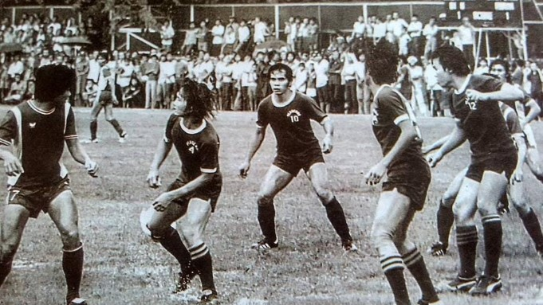
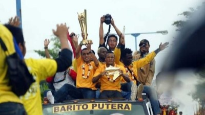
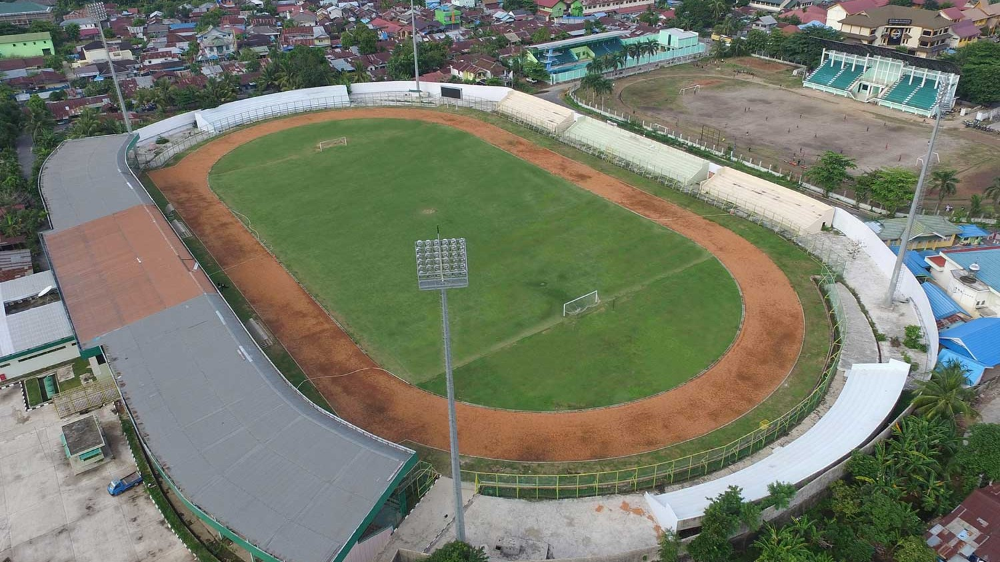

Sejarah

Barito Putera dibentuk dengan harapan memajukan sepak bola Kalimantan Selatan. Lahir dari inisiatif H. Abdussamad Sulaiman HB. Kerangka awal tim berasal dari Persinus Banjarmasin, klub amatir asal Kalimantan Selatan yang juga
didirikan oleh Abdussamad pada tahun 1975, dan dari tim persiapan PON Kalimantan Selatan tahun 1988, seperti Radiani, Tarmizi (Barabai), Masransyah (Rantau), Abdillah, Sultan (Martapura), dua bersaudara M. Yusuf dan M. Riduan,
Sir Yusuf Huwae, Enong Noordiansyah, dan Marjono (Banjarmasin). M. Yusuf ditunjuk menjadi kapten pertama Barito.
Prestasi

Barito Putera telah berkompetisi di Liga 1 sejak musim 2013. Selama berada di liga ini, mereka telah menjadi salah satu tim yang menarik perhatian para penggemar sepak bola Indonesia dengan penampilan mereka yang konsisten.
Namun, sebelum mengukir prestasi di Liga 1, pada musim 2011/2012, Barito Putera berhasil mencapai puncak kejayaan dengan menjadi juara Divisi Utama Liga Indonesia. Mereka meraih gelar ini setelah mengalahkan Persita Tanggerang
dengan skor 2-1 dalam pertandingan final yang digelar di Stadion Manahan Solo, sebuah pencapaian yang membanggakan bagi klub tersebut.
Stadion

Stadion 17 Mei adalah stadion yang menjadi kandang dari PS Barito Putera semenjak berdiri pada tahun 1988. Stadion ini dibangun oleh Pemerintah Provinsi Kalimantan Selatan pada tahun 1974. Renovasi dilakukan pada tahun 2007,
2010 dan 2013. Pada musim 2013, Barito Putera berkandang di Stadion Demang Lehman, karena proses renovasi yang dilakukan di Stadion 17 Mei, sampai digunakan kembali pada tahun 2015.